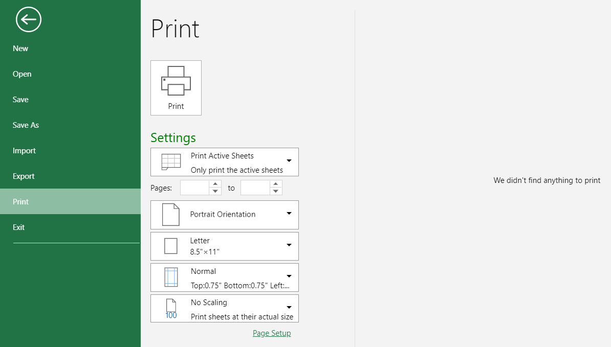

SpreadJS Designer provides a print menu that lets you preview and print all or part of a worksheet or workbook with the information you need. You can set things up and control what is printed with all the available print settings. The print menu is accessed in the same "File" window as New, Import, Export options.

The following features are available in print menu:
| Features | Description |
|---|---|
| Print preview | This area (on the right column) previews pages and all the settings applied before you print. |
| Print button | The browser print dialog pops up when you click the print button. The content is based on the print area. |
| Settings | |
| Print area |
A dropdown consisting of workbook areas to choose from for printing.
|
| Pages from |
Set the starting page. The default and minimum value is 1. The value is 1 if the set value is illegal. |
| Pages to |
Set the last page. The default value is the number of print pages. The value is 1 if the set value is illegal. |
| Page orientation |
Set the page orientation to landscape or portrait. By default, worksheets are printed in portrait (taller than wide). |
| Page size |
Set the paper size. The default is Letter (8.5'' x 11''). |
| Margins |
Set the margin sizes for the print area. Choose from the commonly-used formats provided or create a customized format. |
| Scaling |
Set the scale of the selected print area to fit the data accordingly. By default, no scaling is applied so the worksheet is printed at the actual size. |
The print menu consists of a "Page Setup" option at the end of the left column section which opens a dialog window. This "Page Setup" window expands on the features discussed above and many more. To know more, refer to Page Settings.